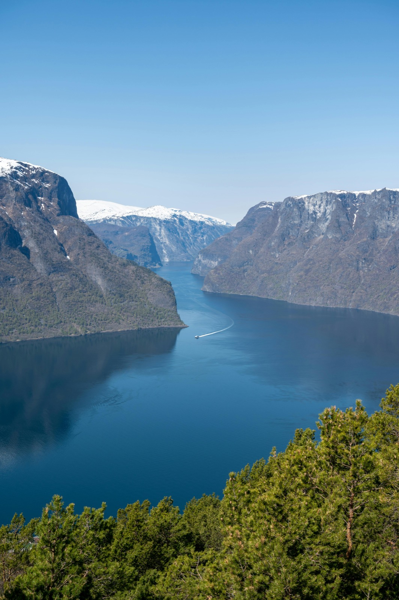
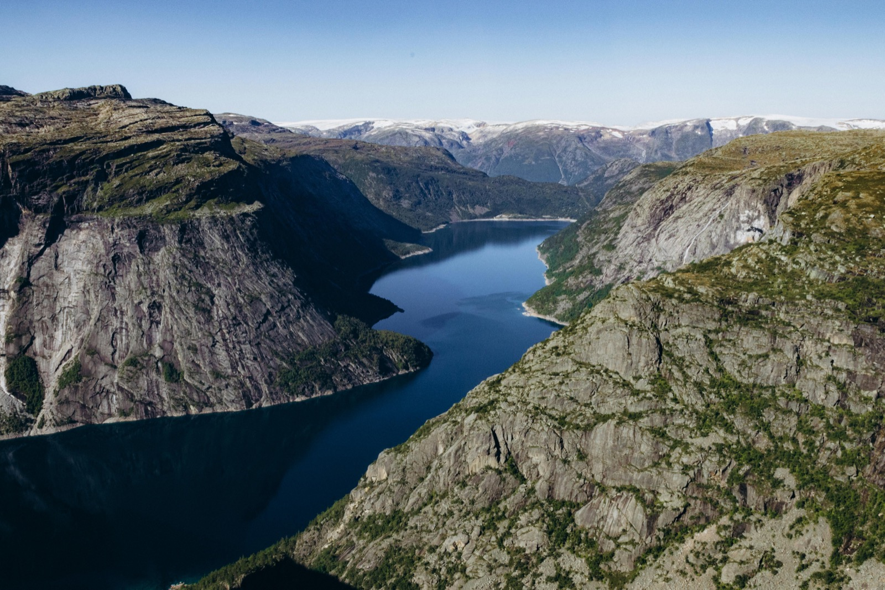
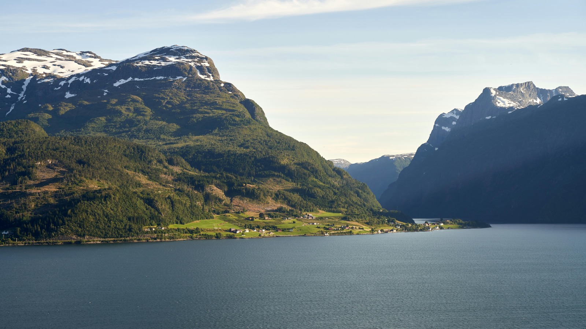

A commanding summit above the Sognefjord — the region's finest half-day hike.
Bergefjellet is the Sognefjord region's signature half-day hike — a 7 km route that climbs from the Siplo ski centre area to a commanding summit with some of the finest views in all of Vestland. The initial section demands real effort, but the terrain opens up beautifully once the first cairn is reached.
From the summit the deep blue of the Sognefjord cuts between the mountains in every direction, with the broad sweep of Norway's longest and deepest fjord opening to the west. On clear days the Stølsheimen mountain massif fills the horizon to the south and east.
The marked trail continues from the summit across gently rolling terrain, offering the option to extend the walk or simply linger at the top with a packed lunch and the view. Back at the fjord by lunchtime.


Bergefjellet is a moderate hike — the first section from Siplo ski centre is the steepest and demands real effort, but the terrain opens up once you reach the first cairn. From there it is pleasant, open walking to the summit. Regular walkers who are comfortable with a steady uphill will enjoy it.
The summit offers some of the finest panoramic views in Vestland. The full length of the Sognefjord — Norway's longest and deepest fjord — stretches beneath you in both directions. On clear days the Stølsheimen mountain massif fills the horizon to the south and east.
The hike starts from the Siplo ski centre area above the Sognefjord. Your guide will confirm the exact meeting point and any transport arrangements when you book.
The full circuit takes 2.5 to 3 hours — a half-day experience. Most groups are back at the fjord well before lunchtime, leaving the afternoon free.
Hiking boots with ankle support are recommended — the lower section is rocky and steep. Bring a windproof layer as the summit is exposed. No technical equipment is required.
Private guided tour — all group sizes